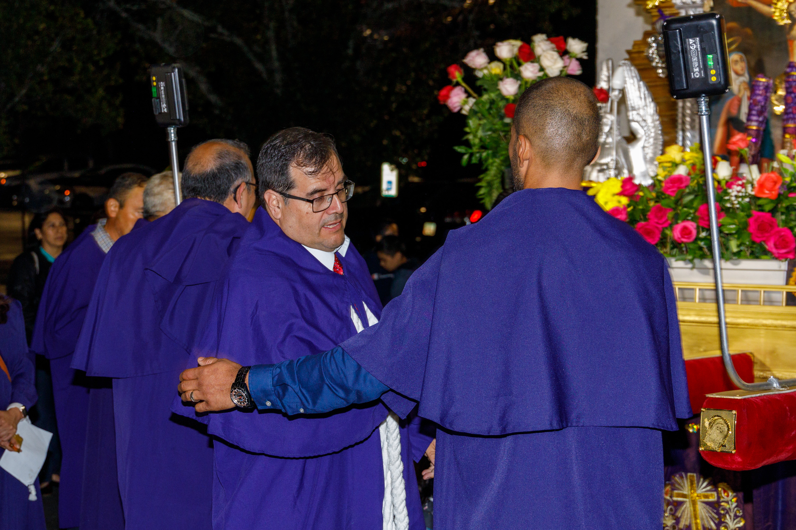

Hermandad del Señor de los Milagros del Sur de Atlanta
La Hermandad del Señor de los Milagros del Sur de Atlanta tiene su base en la iglesia de Holy Trinity Catholic Church, ubicada en Peachtree City, Georgia. Esta organización se formó como parte de un esfuerzo por mantener viva la devoción al Señor de los Milagros entre la comunidad peruana y latina de la región.
Desde su creación, la Hermandad ha trabajado arduamente para organizar y celebrar la tradicional procesión del Señor de los Milagros cada octubre. Esta celebración es un reflejo de la fe y la devoción que caracteriza a los peruanos, y ha crecido en popularidad, atrayendo a personas de diversas nacionalidades que comparten la fe católica.